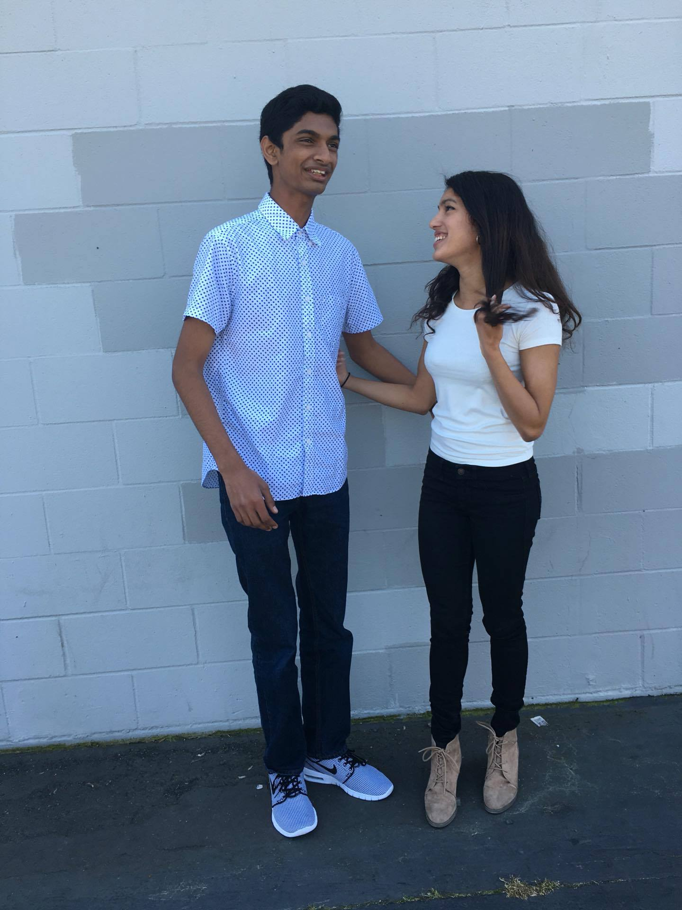

HAPPY BIRTHDAY URMI MUSTAFI !!!!
Just a disclaimer, since I am also making you a wonderful card (still in progress), I decided it would be stupid if I wrote the same shit on both these wishes. So this will be the serious one, and I’ll bless your card with the full might of my humor(probably cause I’m emotional af rn TY SHWETA WTF).
Holy shit. It’s been a long journey hasn’t it haha. If I’ve learned anything this past year, it has been to really appreciate the relationships and friendships I’ve had the privilege to make over the last four years. And there is no relationship that I cherish more than our own. I’m sitting at my desk right now with a smile on my face and nostalgia in my heart, trying but failing to articulate what I am feeling right now. I remember when we started talking again in high school to avoid contact with Tarun. Then there was you laughing so hard in Kadis at one of my dumb jokes that the whole class just turned and stared at me. What you don’t know is that even after you went to the bathroom, giggling the whole way, the class still continued to stare at me LOL. I remember volleytennis and badminton in PE, where we actually tried so hard to win. And then our summer adventures in Berkeley, where you tolerated my broken leg enough to go get food with me. I also remember that pact we made in the Togo’s next to the BART station haha. I could go on and on, but the point is that you have been such an integral part of the last four years of my life. Without you, I would undoubtedly not be the person I am today, and I thank you from the bottom of my heart for that.
Urmi, you are one of the most exceptional people I know. You are kind and caring beyond belief. I am inspired not only by your intelligence and hard work, but you attitude towards life and dedication to whatever you put your mind too. As I have said previously (somewhere on this damn blog), every time I have a conversation with you, I end up happier, and I am blessed to be able to count on you for anything. I believe it is a testament to our friendship that whenever something happens, good or bad, you are the first person I share anything with. When my grandmother died, you were the first person I told. When I got into Berkeley, you were the first person to congratulate me, and I am eternally grateful that you were and always will be there for me.
I am so excited for you and the great things that you will do at MIT. I have said this before and I’ll say it again: nobody deserves MIT more than you. That amazing determination and drive that you have will help you do great things ☺ Forgive my poor writing, there is so much more for me to say, but I’ll leave it for when I see you next week haha.
As we go on to college and the next steps of our life, I want you to know that no matter what happens no matter how far we are apart, nothing will break our friendship and I will always be there for you.
Love you lots Urmi, and Happy Birthday once again!
Your best friend (hopefully :P),
Hari Subbaraj
Quote of the Day:
When we first talked to each otherI knew we would always be friends. Our friendship has kept on growing And I'll be here for you to the end.
You listen when I have a problem And help dry the tears from my face. You take away my sorrow And put happiness in its place.
We can't forget the fun we've had Laughing 'til our faces turn blue. Talking of things only we find funny People think we're insane-If they only knew!
I guess this is my way of saying thanks For catching me when I fall. Thanks once again for being such a good friend And being here with me through it all.
-Rachel Ellis